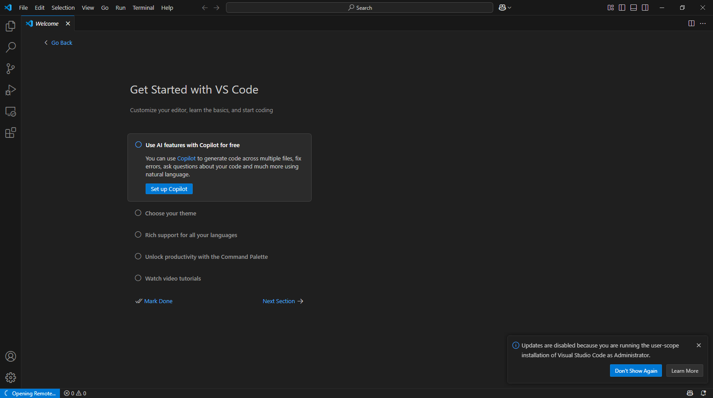

Установка Visual Studio Code на Windows
В этой инструкции вы узнаете, как установить Visual Studio Code (VS Code) на операционную систему Windows и настроить редактор для эффективной работы с проектами на Raspberry Pi.
Что такое Visual Studio Code?
Visual Studio Code — это современный редактор кода, разработанный Microsoft, который сочетает простоту классического текстового редактора с мощными возможностями интегрированной среды разработки (IDE).
Основные преимущества VS Code:
Бесплатный и с открытым исходным кодом
Легкий и быстрый, при этом функциональный
Поддержка множества языков программирования, включая Python
Расширяемость через тысячи доступных плагинов
Встроенная система контроля версий (Git)
Встроенный терминал
Возможность удаленной разработки на Raspberry Pi
Установка VS Code на Windows
Для установки Visual Studio Code на Windows выполните следующие шаги:
Загрузка установщика
Откройте официальный сайт Visual Studio Code: https://code.visualstudio.com/
На главной странице нажмите кнопку «Download for Windows»
Начнется автоматическая загрузка установочного файла (.exe)
Запуск установки
Найдите загруженный файл в папке загрузок (обычно называется «VSCodeUserSetup-x64-X.XX.X.exe»)
Дважды щелкните по файлу, чтобы запустить установку
Если появится запрос от системы безопасности Windows, нажмите «Да»
Настройка параметров установки
Примите лицензионное соглашение и нажмите «Далее»
Выберите папку для установки или оставьте значение по умолчанию
На экране «Выбор дополнительных задач» рекомендуется отметить: - «Создать значок на рабочем столе» - «Добавить действие „Открыть с помощью Code“ для файлов» - «Добавить в PATH»
Завершение установки
Нажмите «Установить» для начала процесса установки
Дождитесь завершения установки
Нажмите «Готово» и при желании запустите VS Code сразу
{kind=link}
{kind=link}
Первый запуск VS Code
После установки Visual Studio Code вы можете запустить его через:
Значок на рабочем столе
Меню «Пуск» → Visual Studio Code
Командную строку, введя команду code
При первом запуске вы увидите начальный экран VS Code:
{kind=link}
Основные элементы интерфейса:
Боковая панель — слева, содержит: * Проводник файлов * Поиск * Система контроля версий * Расширения
Редактор — центральная часть окна
Статусная строка — внизу окна
Терминал — можно открыть через меню «Terminal» → «New Terminal»
Настройка языка интерфейса (русский):
Нажмите Ctrl+Shift+X для открытия панели расширений
В поиске введите «Russian»
Найдите «Russian Language Pack for Visual Studio Code»
Нажмите «Install»
После установки нажмите «Restart»
Установка необходимых расширений
Для эффективной работы с Python и удаленной разработки на Raspberry Pi, рекомендуется установить следующие расширения:
1. Расширение Python
Это расширение добавляет поддержку языка Python с функциями автодополнения, проверки синтаксиса, отладки и многими другими.
Нажмите Ctrl+Shift+X для открытия панели расширений
В поиске введите «Python»
Найдите расширение от Microsoft (с наибольшим количеством загрузок)
Нажмите «Install»
{kind=link}
2. Расширение Remote - SSH
Это расширение позволяет подключаться к Raspberry Pi через SSH и редактировать файлы удаленно.
В панели расширений введите «Remote SSH»
Найдите расширение «Remote - SSH» от Microsoft
Нажмите «Install»
{kind=link}
После установки расширений VS Code может предложить перезагрузиться — согласитесь с этим.
Заключение
Теперь у вас установлен Visual Studio Code с необходимыми расширениями для работы с Python и удаленной разработки на Raspberry Pi. Для настройки удаленного доступа к Raspberry Pi через VS Code, обратитесь к инструкции SSH-подключение VS Code для удаленной разработки на Raspberry Pi.
VS Code предлагает множество дополнительных функций и настроек, которые вы можете изучить в процессе работы. Официальная документация доступна на сайте: https://code.visualstudio.com/docs